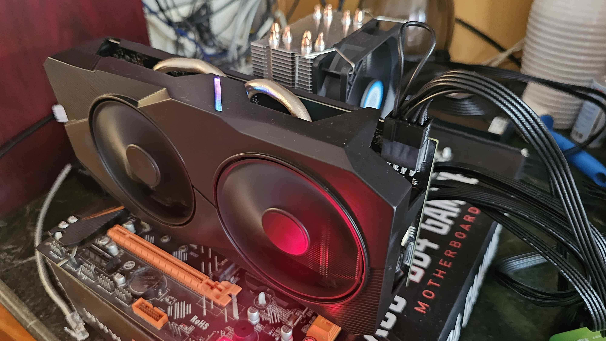
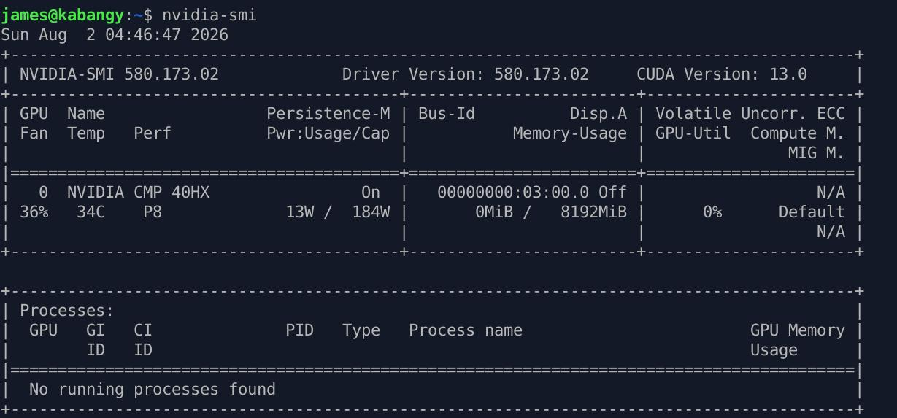

This project turns a Huananzhi X99 BD4 motherboard and two CMP 40HX mining GPUs into a working inference box. The goal was privacy first: proprietary GPU board schematics purchased for a separate repair project should never be sent to an external LLM API, so the only real option was to build something local and capable enough to run a real model at usable context length.
The board is a Huananzhi X99 BD4, paired with two CMP 40HX cards (TU106, compute capability sm_75,
8GB VRAM each). CMP cards ship without display output and with reduced driver support since they were designed
for mining, not compute workloads, so getting them recognized properly took some work.
One of the bigger hardware fixes was a PCIe lane negotiation issue. The cards were not initially negotiating full x16, which capped throughput. AC coupling capacitors soldered directly onto the PCIe lanes resolved this and unlocked full x16 negotiation on both cards.
Idle power draw is managed with a systemd service, cap-cmp40hx.service, that locks GPU clocks to
300 MHz when the cards are not in use, bringing idle draw down to around 12 to 15 watts. Before running
inference, clocks need to be manually reset with nvidia-smi -rgc, otherwise the locked clock
caps performance.

Inference runs through mistral.rs, built from the GitHub master branch rather than the published
0.8.1 crate, which had a linking bug in afq.cu that prevented a clean build.
Getting the CMP cards working with a modern CUDA toolchain required a small patch to candle kernels,
specifically compatibility.cuh. The original guard caused a redefinition collision between
hmax_nan and hmin_nan on this hardware. Changing the guard condition to check both
CUDA_ARCH under 800 and CUDART_VERSION under 12080 resolved it.
The server runs qwen3:8b through mistral.rs behind an OpenAI-compatible endpoint.
Context is tuned to 32,768 tokens, chosen specifically so the full model and context fit in GPU memory without
offloading, keeping everything resident on the two 8GB cards.

On top of the inference endpoint sits OpenClaw, a personal agent built for practical daily use rather than as a demo. It handles email triage, calendar management, and job application tracking, all running against the local model instead of a hosted API.
CMP mining cards are a known genre of budget hardware experimentation, mostly documented outside English-language sources. Two references shaped how this build was approached.
A Bilibili video from the channel 吃饭团的佳乐同学, part of a long running series on modded mining cards, benchmarks a modded 40HX against an RTX 2060 Super and RTX 2060. Their numbers put theoretical performance at least 10 percent ahead of the 2060 Super, with gaming performance about 20 percent behind the 2060 Super but 7 percent ahead of the plain 2060, and productivity or video editing work landing close to the 2060 Super. Deep learning performance was left unverified in that video, which is part of why this project exists as its own writeup.
A more directly relevant source is a Habr article by Oleg titled "Dark horses of AI," covering LLM inference specifically on the CMP 40HX, 50HX, and 90HX line. It confirms the same pattern seen in this build: synthetic FP32 benchmarks make these cards look ten times slower than older gaming GPUs, but real LLM inference throughput lands close to an RTX 2060 or 3060, around 30 tokens per second on 8B models. The article traces this to Ollama and similar frameworks running inference primarily in FP16 rather than FP32, and FP16 throughput on these cards is nowhere near as crippled as FP32 is, in some cases beating an RTX 3060 outright.
The article also independently confirms the PCIe capacitor fix used on this build. Mining cards typically ship with capacitors populated only for 4 lanes even though the board supports 16, and soldering 0402 package 100 or 220 nanofarad capacitors onto the remaining lanes physically unlocks the missing width. Their testing found that lane width barely affects raw token throughput, roughly a percent or two gain from 4 lanes to 16, since 8 lanes already clears the bottleneck for inference. The real benefit is model and context load time, which improved by close to half going from 4 lanes to 16 in their tests. That lines up with why this build targeted full x16 negotiation — the win is in how fast the server comes up and reloads context, not raw tokens per second.
Off the shelf cloud inference is fast to set up but sends everything, including sensitive or proprietary data, off device. This project exists to prove that a genuinely usable local setup is achievable on a tight budget using hardware most people would consider unsuitable for the job. Two mining cards not designed for this workload, a patched build, and a few soldered joints turned into a machine that runs a real model at real context length, entirely under local control.